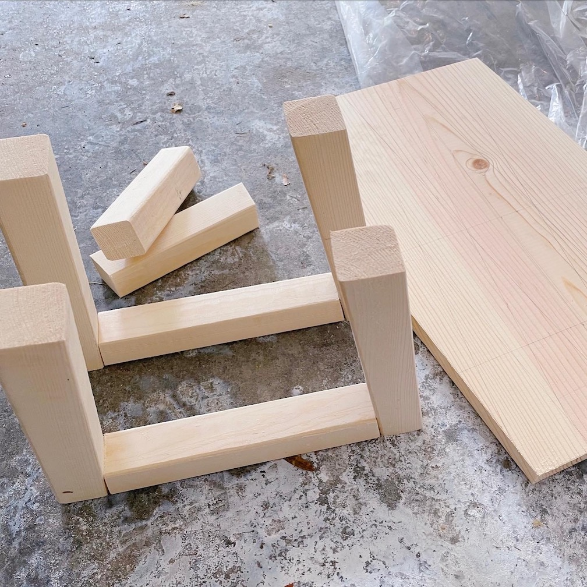
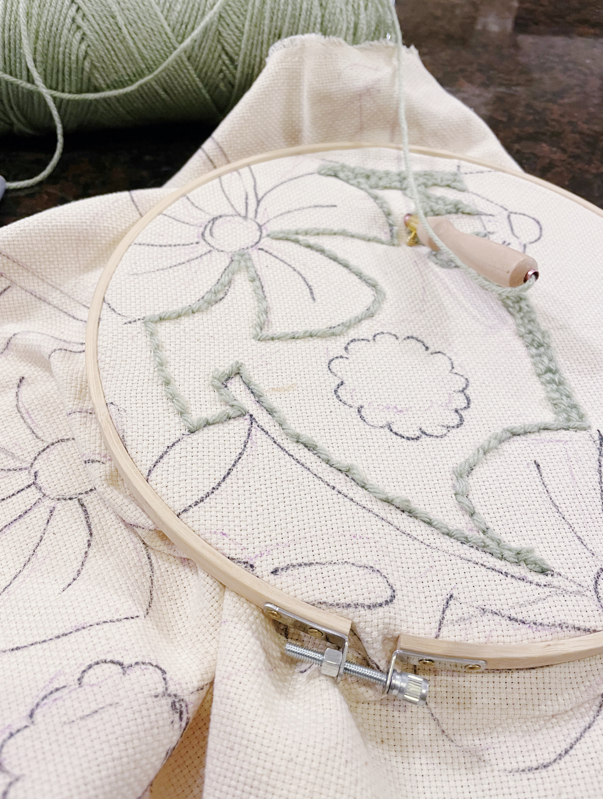
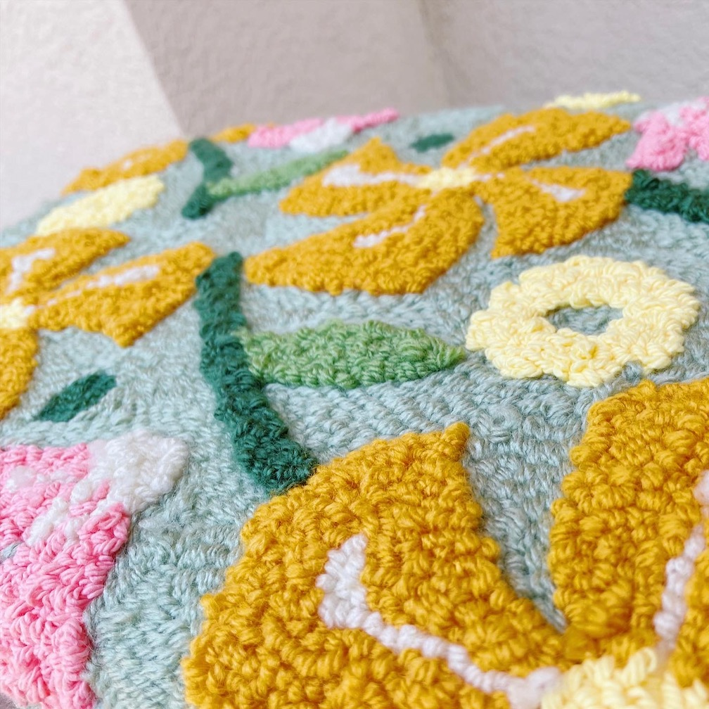
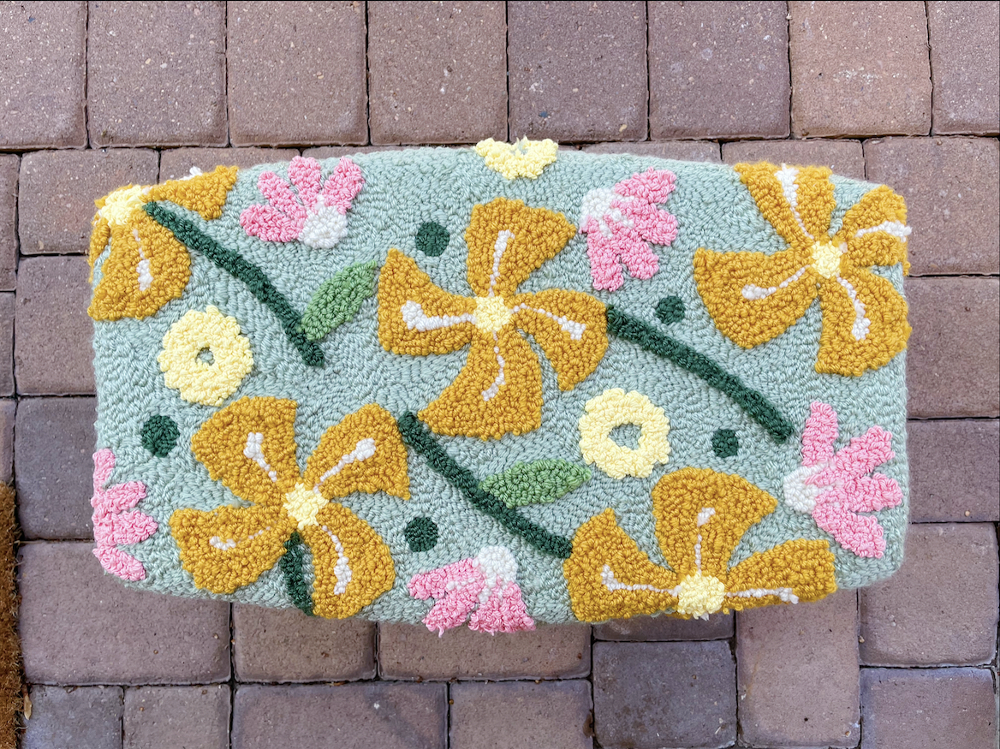

I made this stool from a 2x2x8 and 1/2 in. piece of plywood. I didn't make a sketch beforehand, but I knew I wanted something a little funkier than a standard boxy stool. The seat is a stretched hexagonal shape and the legs are slightly angled to create a trapezoid.
The punch needled cushion took the longest -- I initially used an embroidery hoop but soon made a small wooden frame for the cushion. I wanted the flowers to feel slightly raised above the green grass background, so I punch needled the background and foreground on separate sides of the fabric
Close-up view of the "Springtime" pattern. I used the Airtex 2" High Density Foam for the cushion and used a staple gun to attach the fabric to the wood
Top view of the stool
